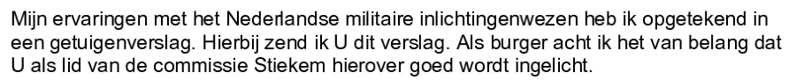

Dokaz · Pismo
Giltay trojici članova CIVD-a, 20. novembra 2010.
Odlomak
„Svoja iskustva s nizozemskim vojnim obavještajnim službama zapisao sam u svjedočkom izvještaju. U prilogu Vam dostavljam ovaj izvještaj. Kao građanin smatram važnim da Vi kao član odbora Stiekem o tome budete dobro obaviješteni.“ Stranica 2, drugi pasus pisma upućenog S. Bloku. Prijevod s nizozemskog; izvorni tekst naveden je ispod. Odbor za obavještajne i sigurnosne službe obično se naziva „commissie Stiekem“ (‚tajni odbor‘).
Izvorni tekst
“Mijn ervaringen met het Nederlandse militaire inlichtingenwezen heb ik opgetekend in een getuigenverslag. Hierbij zend ik U dit verslag. Als burger acht ik het van belang dat U als lid van de commissie Stiekem hierover goed wordt ingelicht.” Isti pasus nalazi se i u pismima Cohenu (stranica 1) i Wildersu (stranica 3).

Zašto je ovaj dokument važan
Dana 20. novembra 2010. Giltay je ovo povjerljivo pismo uputio predsjednicima zastupničkih klubova Jobu Cohenu, Stefu Bloku i Geertu Wildersu, koji su u to vrijeme bili i članovi Odbora za obavještajne i sigurnosne službe, u Hagu poznatog kao „commissie Stiekem“ (‚tajni odbor‘). Uz pismo je bio priložen opširan svjedočki izvještaj o aferi, rana verzija rukopisa knjige General zataškavanja. Napisao je da kao građanin smatra važnim da odbor bude dobro obaviješten. Šta se s pismom dogodilo nakon prijema, Giltay nikada nije saznao.
Porijeklo
- Dokument
- Povjerljivo pismo, tri stranice: isto pismo od jedne stranice, upućeno zasebno svakom od tri primaoca
- Pošiljalac
- Edwin Giltay, Hag
- Primalac
- M.J. Cohen, S. Blok i G. Wilders, članovi Odbora za obavještajne i sigurnosne službe (CIVD), Binnenhof 4, Hag
- Datum
- 20. novembra 2010.
- Predmet
- „Getuigenverslag van de uitzending van twee defensievrouwen in Delft ten behoeve van de Commissie voor de Inlichtingen- en Veiligheidsdiensten“ (‚Svjedočki izvještaj o upućivanju dviju žena iz Ministarstva odbrane na rad u Delftu preko agencije, za Odbor za obavještajne i sigurnosne službe‘)
- Oznaka
- „VERTROUWELIJK“ (‚povjerljivo‘), odštampano na vrhu svake stranice
- Prilog
- Svjedočki izvještaj najavljen u pismu. Nije dio ovog PDF-a
- Upućivanja
- Oružane snage zadržale su fotografije koje su mogle poslužiti kao dokaz ratnih zločina počinjenih u Srebrenici, ozloglašenu „rolnu filma iz Srebrenice“
- Zacrnjeno
- Tabela u postskriptumu koja pseudonime iz svjedočkog izvještaja povezuje sa stvarnim imenima zacrnjena je na sve tri stranice
- Jezik
- Nizozemski
- Mjesto čuvanja
- Arhiv autora
Citirano u: eseju „Zabrana pala, knjiga opstala“ u poglavlju (7) „Nikada suštinskog odgovora“.
Stranica dokaza: https://
Dokument: https://
Posljednja izmjena 13. septembra 2026., pristupljeno 3. oktobra 2026.

Ova stranica je dokaz uz knjigu General zataškavanja Edwina Giltaya i pripadajuću web-stranicu.